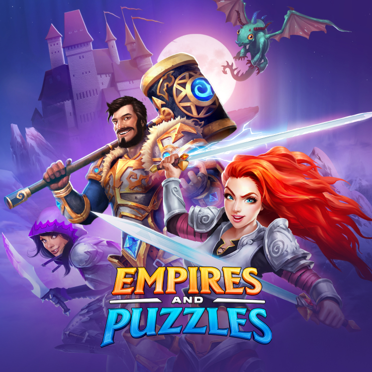
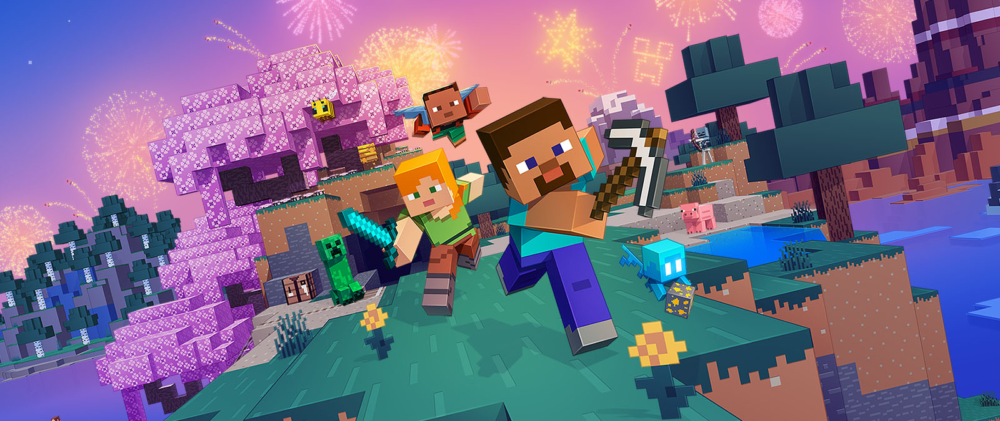
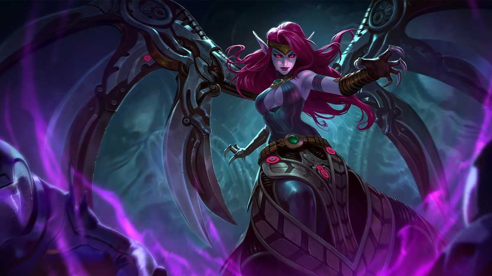
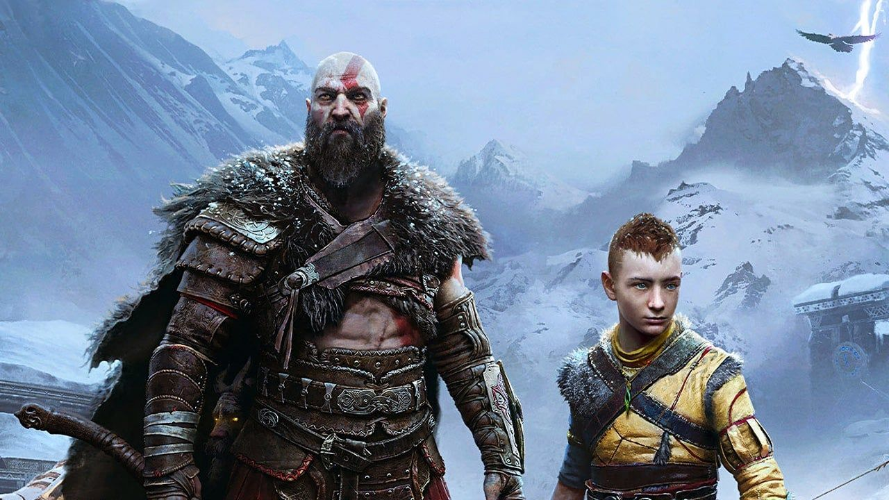
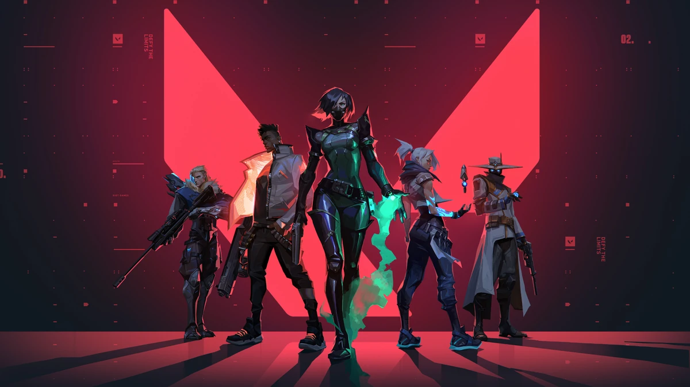
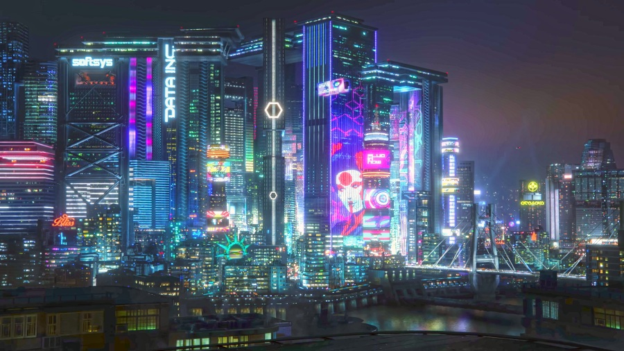
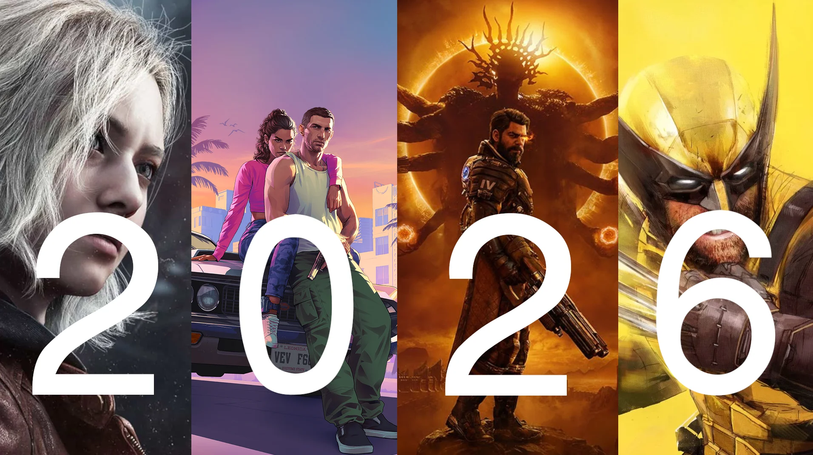
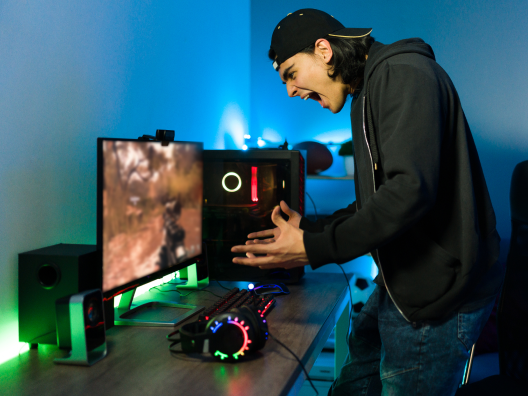

EA Sports FC: una nueva era para los juegos de fútbol
La franquicia inicia una nueva etapa con mejoras gráficas, modos de juego renovados y una experiencia competitiva que busca atraer tanto a jugadores casuales como expertos.
Bienvenido a Generation Game Blog, un espacio creado para los amantes de los videojuegos. Aquí encontrarás noticias, análisis, recomendaciones y tendencias sobre juegos, consolas, tecnología gamer y eSports.
Ver artículos
La franquicia inicia una nueva etapa con mejoras gráficas, modos de juego renovados y una experiencia competitiva que busca atraer tanto a jugadores casuales como expertos.

La expansión más esperada de Elden Ring llega con nuevas zonas, enemigos y desafíos para los jugadores.

Desde construcciones monumentales hasta complejos sistemas de automatización, Minecraft ofrece infinitas posibilidades para jugadores de todas las edades.

Con millones de jugadores alrededor del mundo, League of Legends se mantiene como uno de los juegos competitivos más populares gracias a su constante evolución.

Kratos y Atreus enfrentan nuevos desafíos en una aventura cargada de acción, emoción y referencias a la mitología nórdica.

La combinación de precisión, estrategia y habilidades especiales convierte a Valorant en una de las propuestas más interesantes del género competitivo.

Tras un lanzamiento complicado, el juego ha evolucionado mediante mejoras técnicas y nuevo contenido, ofreciendo una experiencia mucho más sólida.

Cada año llegan nuevos títulos que prometen cambiar la forma en que jugamos. En este blog hablaremos sobre lanzamientos, géneros populares y experiencias que emocionan a la comunidad gamer.

Los deportes electrónicos se han convertido en una industria mundial. Juegos como League of Legends, Valorant, Counter-Strike y FIFA reúnen a millones de jugadores y espectadores.

Un buen rendimiento no depende solo del juego. También influyen la configuración, los periféricos, la conexión a internet y los hábitos de cada jugador.